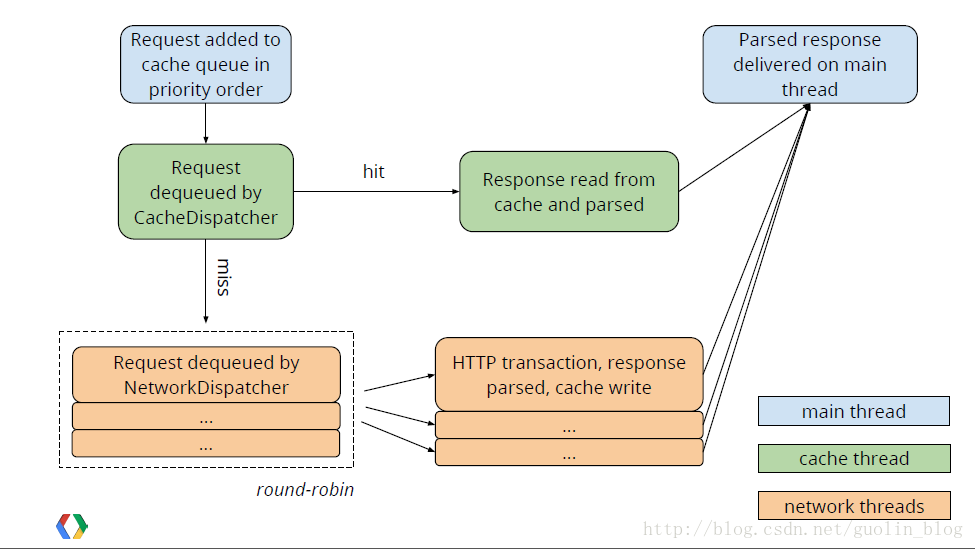

这是第一篇认真阅读的源码，虽说不能说完全看明白了，但还是有一点收获，在此记录一下自认为读懂的一点东西！
Volley是谷歌提供的网络请求框架，使用非常简单，就不多说了。
首先是Volley的构造函数最终都会调用如下函数
1 2 3 4 5 6 7 8 9 10 11 12 13 14 15 16 17 18 19 20 21 22 23 24 25 26 27 28 29 30 31 32 33 34 35 36 37 38 39 40 41 42 43 44 45 46
| public static RequestQueue newRequestQueue(Context context, HttpStack stack, int maxDiskCacheBytes) { File cacheDir = new File(context.getCacheDir(), DEFAULT_CACHE_DIR); String userAgent = "volley/0"; try { String packageName = context.getPackageName(); PackageInfo info = context.getPackageManager().getPackageInfo(packageName, 0); userAgent = packageName + "/" + info.versionCode; } catch (NameNotFoundException e) { } if (stack == null) { if (Build.VERSION.SDK_INT >= 9) { stack = new HurlStack(); } else { stack = new HttpClientStack(AndroidHttpClient.newInstance(userAgent)); } } Network network = new BasicNetwork(stack); RequestQueue queue; if (maxDiskCacheBytes <= -1) { queue = new RequestQueue(new DiskBasedCache(cacheDir), network); } else { queue = new RequestQueue(new DiskBasedCache(cacheDir, maxDiskCacheBytes), network); } queue.start(); return queue; }
|
首先创建了一个默认缓存文件名，然后根据版本创建合适的网络请求方法HttpUrlConnection或HttpClient,HttpUrlConnection在发送请求时会自动加上代理，所以在创建时没有使用所得到的代理名。
然后创建一个Network,主要是对两种网络请求的封装，再然后创建请求队列两个参数分别是以上的Network和以上述文件名创建的磁盘缓存。
然后看queue.start()函数
1 2 3 4 5 6 7 8 9 10 11 12 13 14 15 16 17
| public void start() { stop(); mCacheDispatcher = new CacheDispatcher(mCacheQueue, mNetworkQueue, mCache, mDelivery); mCacheDispatcher.start(); for (int i = 0; i < mDispatchers.length; i++) { NetworkDispatcher networkDispatcher = new networkDispatcher(mNetworkQueue, mNetwork, mCache, mDelivery); mDispatchers[i] = networkDispatcher; networkDispatcher.start(); } }
|
其中CacheDispatcher和networkDispatcher都是继承自Thread的线程，默认是4个线程，所以默认情况下后台有一个缓存线程和四个工作线程共五个，缓存线程如下：
1 2 3 4 5 6 7 8 9 10 11 12 13 14 15 16 17 18 19 20 21 22 23 24 25 26 27 28 29 30 31 32 33 34 35 36 37 38 39 40 41 42 43 44 45 46 47 48 49 50 51 52 53 54 55 56 57 58 59 60 61 62 63 64 65 66 67 68 69 70 71 72 73 74 75 76 77 78 79 80 81 82 83 84 85 86 87 88 89 90 91 92 93 94 95 96 97
| public void run() { if (DEBUG) VolleyLog.v("start new dispatcher"); Process.setThreadPriority(Process.THREAD_PRIORITY_BACKGROUND); mCache.initialize(); Request<?> request; while (true) { request = null; try { request = mCacheQueue.take(); } catch (InterruptedException e) { if (mQuit) { return; } continue; } try { request.addMarker("cache-queue-take"); if (request.isCanceled()) { request.finish("cache-discard-canceled"); continue; } Cache.Entry entry = mCache.get(request.getCacheKey()); if (entry == null) { request.addMarker("cache-miss"); mNetworkQueue.put(request); continue; } if (entry.isExpired()) { request.addMarker("cache-hit-expired"); request.setCacheEntry(entry); mNetworkQueue.put(request); continue; } request.addMarker("cache-hit"); Response<?> response = request.parseNetworkResponse(new NetworkResponse(entry.data, entry.responseHeaders)); request.addMarker("cache-hit-parsed"); if (!entry.refreshNeeded()) { mDelivery.postResponse(request, response); } else { request.addMarker("cache-hit-refresh-needed"); request.setCacheEntry(entry); response.intermediate = true; final Request<?> finalRequest = request; mDelivery.postResponse(request, response, new Runnable() { @Override public void run() { try { mNetworkQueue.put(finalRequest); } catch (InterruptedException e) { } } }); } } catch (Exception e) { VolleyLog.e(e, "Unhandled exception %s", e.toString()); } } }
|
首先读取磁盘中的缓存，然后不断从requestQuene中读取请求，这是一个BlockingQuene当队列为空时，take()函数会阻塞，获取request后判断缓存中是否有相应数据且新鲜当不符合时，加入到mNetworkQueue，若符合直接分发缓存数据。
然后看工作线程，
1 2 3 4 5 6 7 8 9 10 11 12 13 14 15 16 17 18 19 20 21 22 23 24 25 26 27 28 29 30 31 32 33 34 35 36 37 38 39 40 41 42 43 44 45 46 47 48 49 50 51 52 53 54 55 56 57 58 59 60 61 62 63 64 65 66 67 68 69 70 71 72 73 74 75 76
| public void run() { Process.setThreadPriority(Process.THREAD_PRIORITY_BACKGROUND); Request<?> request; while (true) { long startTimeMs = SystemClock.elapsedRealtime(); request = null; try { request = mQueue.take(); } catch (InterruptedException e) { if (mQuit) { return; } continue; } try { request.addMarker("network-queue-take"); if (request.isCanceled()) { request.finish("network-discard-cancelled"); continue; } addTrafficStatsTag(request); NetworkResponse networkResponse = mNetwork.performRequest(request); request.addMarker("network-http-complete"); if (networkResponse.notModified && request.hasHadResponseDelivered()) { request.finish("not-modified"); continue; } Response<?> response = request.parseNetworkResponse(networkResponse); request.addMarker("network-parse-complete"); if (request.shouldCache() && response.cacheEntry != null) { mCache.put(request.getCacheKey(), response.cacheEntry); request.addMarker("network-cache-written"); } request.markDelivered(); mDelivery.postResponse(request, response); } catch (VolleyError volleyError) { volleyError.setNetworkTimeMs(SystemClock.elapsedRealtime() - startTimeMs); parseAndDeliverNetworkError(request, volleyError); } catch (Exception e) { VolleyLog.e(e, "Unhandled exception %s", e.toString()); VolleyError volleyError = new VolleyError(e); volleyError.setNetworkTimeMs(SystemClock.elapsedRealtime() - startTimeMs); mDelivery.postError(request, volleyError); } } }
|
应该可以猜到了工作者线程会不断的从mNetworkQuene中获取请求并处理，这里的mQuene就是刚才的mNetworkQuene,然后看其中的mNetwork.performRequest(request)，在这里会处理请求相关的网络方面的内容，request默认是会缓存的，所以获得结果后会缓存数据，然后分发数据。跟进performRequest()函数：
1 2 3 4 5 6 7 8 9 10 11 12 13 14 15 16 17 18 19 20 21 22 23 24 25 26 27 28 29 30 31 32 33 34 35 36 37
| public NetworkResponse performRequest(Request<?> request) throws VolleyError { long requestStart = SystemClock.elapsedRealtime(); while (true) { HttpResponse httpResponse = null; byte[] responseContents = null; Map<String, String> responseHeaders = Collections.emptyMap(); try { Map<String, String> headers = new HashMap<String, String>(); addCacheHeaders(headers, request.getCacheEntry()); httpResponse = mHttpStack.performRequest(request, headers); StatusLine statusLine = httpResponse.getStatusLine(); int statusCode = statusLine.getStatusCode(); responseHeaders = convertHeaders(httpResponse.getAllHeaders()); ... return new NetworkResponse(statusCode, responseContents, responseHeaders, false, SystemClock.elapsedRealtime() - requestStart); } catch (SocketTimeoutException e) { attemptRetryOnException("socket", request, new TimeoutError()); } ... }
|
发现其中有调用相应网络模型的performRequent()以HttpUrlConnection为例，如下，
1 2 3 4 5 6 7 8 9 10 11 12 13 14 15 16 17 18 19 20 21 22 23 24 25 26 27 28 29 30 31 32 33 34 35 36 37 38 39 40 41 42 43 44 45 46 47 48 49 50 51 52 53 54 55 56 57 58 59 60 61 62 63 64
| public HttpResponse performRequest(Request<?> request, Map<String, String> additionalHeaders) throws IOException, AuthFailureError { String url = request.getUrl(); HashMap<String, String> map = new HashMap<String, String>(); map.putAll(request.getHeaders()); map.putAll(additionalHeaders); if (mUrlRewriter != null) { String rewritten = mUrlRewriter.rewriteUrl(url); if (rewritten == null) { throw new IOException("URL blocked by rewriter: " + url); } url = rewritten; } URL parsedUrl = new URL(url); HttpURLConnection connection = openConnection(parsedUrl, request); for (String headerName : map.keySet()) { connection.addRequestProperty(headerName, map.get(headerName)); } setConnectionParametersForRequest(connection, request); ProtocolVersion protocolVersion = new ProtocolVersion("HTTP", 1, 1); int responseCode = connection.getResponseCode(); if (responseCode == -1) { throw new IOException("Could not retrieve response code from HttpUrlConnection."); } StatusLine responseStatus = new BasicStatusLine(protocolVersion, connection.getResponseCode(), connection.getResponseMessage()); BasicHttpResponse response = new BasicHttpResponse(responseStatus); if (hasResponseBody(request.getMethod(), responseStatus.getStatusCode())) { response.setEntity(entityFromConnection(connection)); } for (Entry<String, List<String>> header : connection.getHeaderFields().entrySet()) { if (header.getKey() != null) { Header h = new BasicHeader(header.getKey(), header.getValue().get(0)); response.addHeader(h); } } return response; }
|
这里的代码应该就很熟悉了，主要是用HttpUrlConnection发送一个网络请求并返回结果，到这里对Volley的工作过程有一个基本的了解了，那么RequestQuene的add()方法应该也能猜到了，应该就是把一个请求加入到缓存队列或网络队列，看一下代码：
1 2 3 4 5 6 7 8 9 10 11 12 13 14 15 16 17 18 19 20 21 22 23 24 25 26 27 28 29 30 31 32 33 34 35 36 37 38 39 40 41 42 43 44 45 46 47 48 49 50
| public <T> Request<T> add(Request<T> request) { request.setRequestQueue(this); synchronized (mCurrentRequests) { mCurrentRequests.add(request); } request.setSequence(getSequenceNumber()); request.addMarker("add-to-queue"); if (!request.shouldCache()) { mNetworkQueue.add(request); return request; } synchronized (mWaitingRequests) { String cacheKey = request.getCacheKey(); if (mWaitingRequests.containsKey(cacheKey)) { Queue<Request<?>> stagedRequests = mWaitingRequests.get(cacheKey); if (stagedRequests == null) { stagedRequests = new LinkedList<Request<?>>(); } stagedRequests.add(request); mWaitingRequests.put(cacheKey, stagedRequests); if (VolleyLog.DEBUG) { VolleyLog.v("Request for cacheKey=%s is in flight, putting on hold.", cacheKey); } } else { mWaitingRequests.put(cacheKey, null); mCacheQueue.add(request); } return request; } }
|
可以看到，确实像想的一样，判断请求是否应该被缓存，是就加入缓存线程，否就加入工作线程。到这里再配合下面一张图片应该就能更加清楚的理解Volley了。

看这些代码从一开始看的头皮发麻，到最后的一点点的理解，从中学到了很多东西，其中很多自己平时不怎么会用的东西更熟悉了，同时在不断的摸索中学会了一些看源码的技巧，就是不能纠结于某一行代码不放过，而应该从整体的功能上去理解代码，不拘泥于细枝末节，这样阅读代码就会很轻松，当对整体有一个把握时，再回头去看那些地方，会有一种豁然开朗的感觉。